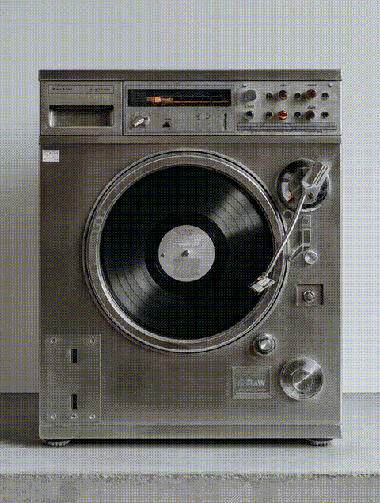

Private Listening Laundromat
A laundromat reimagined as a private listening space, where waiting time becomes an intentional music experience.
Concept / Brand Identity / Art Direction / Motion / Graphic Design
Logo Design / Spatial Direction / Signage / Poster / Short Animation
Brand Identity / Spatial Experience / Motion
wash.wav transforms the laundromat into a private listening space. Inspired by the circular motion of washing machines and vinyl records, the project turns laundry waiting time into a quiet listening ritual.

The identity connects the visual language of laundry, sound, and circular motion through a refined wordmark and spatial signage.

Short looping animations explore the relationship between laundry rotation, vinyl movement, and sound rhythm.



Each washing machine is paired with an individual chair, allowing users to sit in front of their own machine while selecting a music genre through a dial-based interface.